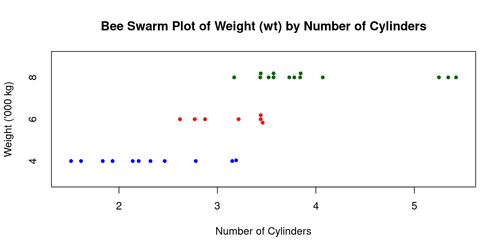
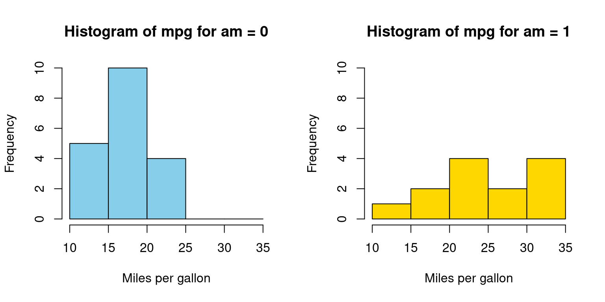
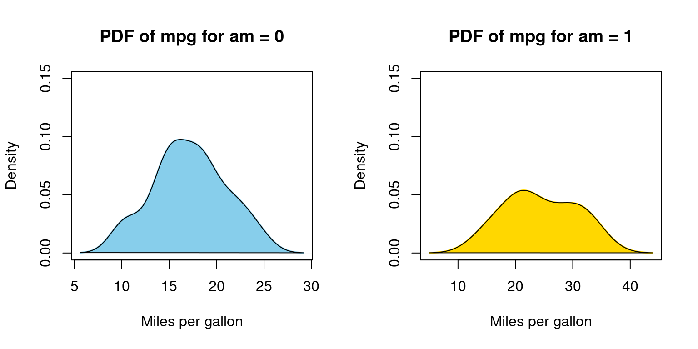
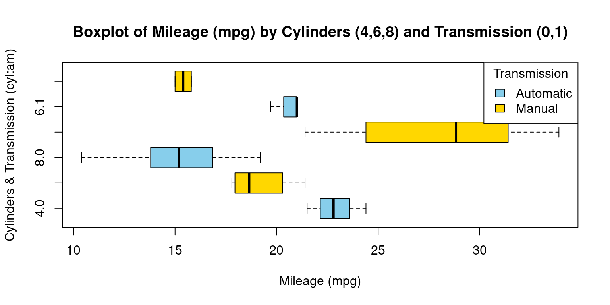

# Load the required libraries, suppressing annoying startup messages
library(tibble)
suppressPackageStartupMessages(library(dplyr))
# Read the mtcars dataset into a tibble called tb
data(mtcars)
tb <- as_tibble(mtcars)
# Convert several numeric columns into factor variables
tb$cyl <- as.factor(tb$cyl)
tb$vs <- as.factor(tb$vs)
tb$am <- as.factor(tb$am)
tb$gear <- as.factor(tb$gear)
# Directly access the data columns of tb, without tb$mpg
attach(tb)Continuous Data (3 of 6)
Aug 5, 2023
THIS CHAPTER explores Continuous x Categorical data. Specifically, it explains how to summarize and visualize bivariate continuous data across categories. Here, we delve into the intersection of continuous data and categorical variables, examining how the former can be split, summarized, and compared across different levels of one or more categorical variables.
We bring to light methods for generating statistics per group and sophisticated data manipulation techniques. This includes processes like grouping, filtering, and summarizing continuous data, contingent on categorical variables. When it comes to visualizations, our focus shifts towards creating juxtaposed box plots, segmented histograms, and density plots that reveal the distribution of continuous data across varied categories.
Incorporating categorical variables into our analysis elevates the depth of our comprehension of the data. It allows us to shift from a broad, holistic view to a more concentrated inspection of specific data segments. This approach empowers us to produce a more granular and nuanced interpretation of our data.
Data: Let us work with the same
mtcarsdata from the previous chapter. Suppose we run the following code to prepare the data for subsequent analysis. The data is now in a tibble calledtb:
Summarizing Continuous Data
Across one Category
R has a variety of functions that can be used to summarize continuous data split across a category.
We review the use of the inbuilt functions (i)
aggregate(); (ii)tapply(); and the function (iii)describeBy()from packagepysch.
- Using
aggregate()
- We can use the
aggregate()function to investigate the bivariate Relationship between Miles Per Gallon (mpg) and Cylinders (cyl). The following code will display a summary table showing the average mileage of the cars broken down by number of cylinders (cyl= 4, 6, 8) usingaggregate().
agg <- aggregate(tb$mpg,
by = list(tb$cyl),
FUN = mean)
names(agg) <- c("Cylinders", "Mean_mpg")
agg Cylinders Mean_mpg
1 4 26.66364
2 6 19.74286
3 8 15.10000- Discussion:
The first argument in
aggregate()istb$mpg, which is the data vector we want to apply the function to.The second argument,
by, denotes a list of variables to group by. Here, we’ve suppliedtb$cyl, implying that we wish to partition our data based on the unique values ofcyl.The third argument,
FUN, is the function we want to apply to each subset of data. We are usingmeanhere, meaning we’re calculating the average mpg for each unique cyl value.The output of
aggregate()is saved in a new tibble namedagg.Finally, we utilize the
names()function to rename the columns and displayagg. [1]
- Using
tapply()
- The
tapply()function is a convenient tool to apply a function to subsets of a vector, grouped by some factors.
tapply(tb$mpg, tb$cyl, mean) 4 6 8
26.66364 19.74286 15.10000 - Discussion:
In this code,
tapply(tb$mpg, tb$cyl, mean)calculates the average miles per gallon (mpg) for each unique number of cylinders (cyl) within thetbtibble.tb\$mpgrepresents the vector to which we want to apply the function.tb\$cylserves as our grouping factor. We are partitioning our data based on the unique values within thecylcolumn in ourtbtibble.meanis the function that we’re applying to each subset of our data.The result will be a vector where each element is the average
mpgfor a unique number of cylinders (cyl), as determined by the unique values oftb$cyl. [1]
- Using
describeBy()from packagepsych
- The
describeBy()function, part of thepsychpackage, can be used to compute descriptive statistics of a numeric variable, broken down by levels of a grouping variable.
library(psych)
stats0 <- describeBy(mpg, cyl)
stats0
Descriptive statistics by group
group: 4
vars n mean sd median trimmed mad min max range skew kurtosis se
X1 1 11 26.66 4.51 26 26.44 6.52 21.4 33.9 12.5 0.26 -1.65 1.36
------------------------------------------------------------
group: 6
vars n mean sd median trimmed mad min max range skew kurtosis se
X1 1 7 19.74 1.45 19.7 19.74 1.93 17.8 21.4 3.6 -0.16 -1.91 0.55
------------------------------------------------------------
group: 8
vars n mean sd median trimmed mad min max range skew kurtosis se
X1 1 14 15.1 2.56 15.2 15.15 1.56 10.4 19.2 8.8 -0.36 -0.57 0.68- Discussion:
describeBy(mpg, cyl)computes descriptive statistics of miles per gallonmpgvariable, broken down by the unique values in the number of cylinders (cyl).It calculates statistics such as the mean, standard deviation, and quartiles for
mpg, separately for each unique number of cylinders (cyl). [2]
Across two Categories
We extend the above discussion and study how to summarize continuous data split across two categories.
We review the use of the inbuilt functions (i)
aggregate(); (ii)tapply(); and the function (iii)describeBy()from packagepysch.
- Using
aggregate()
- Distribution of Mileage (
mpg) by Cylinders (cyl= {4,6,8}) and Transmisson Type (am= {0,1})
agg2 <- aggregate(tb$mpg,
by = list(tb$cyl, tb$am),
FUN = mean)
names(agg2) <- c("Cylinders","Transmission","Mean_mpg")
agg2 Cylinders Transmission Mean_mpg
1 4 0 22.90000
2 6 0 19.12500
3 8 0 15.05000
4 4 1 28.07500
5 6 1 20.56667
6 8 1 15.40000- Discussion:
In our code, the first argument of
aggregate()istb$mpg, indicating that we want to perform computations on thempgvariable.The by argument is a list of variables by which we want to group our data, specified as
list(tb$cyl, tb$am). This means that separate computations are done for each unique combination ofcylandam.The
FUNargument indicates the function to be applied to each subset of our data. Here, we use mean, meaning that we compute the mean mpg for each group.
- Consider this extension of the above code for calculating the mean of three variables - mpg, wt, and hp, grouped by both am and cyl variables:
- Distribution of Mileage (
mpg), Weight (wt), Horsepower (hp) by Cylinders (cyl= {4,6,8}) and Transmisson Type (am= {0,1})
agg3 <- aggregate(list(tb$mpg, tb$wt, tb$hp),
by = list(tb$am, tb$cyl),
FUN = mean)
names(agg3) <- c("Transmission","Cylinders","Mean_mpg","Mean_wt","Mean_hp")
agg3 Transmission Cylinders Mean_mpg Mean_wt Mean_hp
1 0 4 22.90000 2.935000 84.66667
2 1 4 28.07500 2.042250 81.87500
3 0 6 19.12500 3.388750 115.25000
4 1 6 20.56667 2.755000 131.66667
5 0 8 15.05000 4.104083 194.16667
6 1 8 15.40000 3.370000 299.50000- Discussion:
In this code, the
aggregate()function takes a list of the three variables as its first argument, indicating that the mean should be calculated for each of these variables separately within each combination ofamandcyl.The sequence of the categorizing variables also varies - initially, the data is grouped by
cyl, followed by a subdivision based onam.
- Using
tapply()
- While the
tapply()function can theoretically be employed for this task, the resulting code tends to be long and lacks efficiency. Therefore, we opt to exclude it from practical use.
- Using
describeBy()from packagepsych
The
describeBy()function, part of thepsychpackage, can be used to compute descriptive statistics of continuous variable, broken down by levels of a two categorical varaibles.Consider the following code:
tb_columns <- tb[c("mpg", "wt", "hp")]
tb_factors <- list(tb$am, tb$cyl)
# Use describeBy()
stats <- describeBy(tb_columns, tb_factors)
print(stats)
Descriptive statistics by group
: 0
: 4
vars n mean sd median trimmed mad min max range skew kurtosis
mpg 1 3 22.90 1.45 22.80 22.90 1.93 21.50 24.40 2.90 0.07 -2.33
wt 2 3 2.94 0.41 3.15 2.94 0.06 2.46 3.19 0.73 -0.38 -2.33
hp 3 3 84.67 19.66 95.00 84.67 2.97 62.00 97.00 35.00 -0.38 -2.33
se
mpg 0.84
wt 0.24
hp 11.35
------------------------------------------------------------
: 1
: 4
vars n mean sd median trimmed mad min max range skew kurtosis
mpg 1 8 28.08 4.48 28.85 28.08 4.74 21.40 33.90 12.50 -0.21 -1.66
wt 2 8 2.04 0.41 2.04 2.04 0.36 1.51 2.78 1.27 0.35 -1.15
hp 3 8 81.88 22.66 78.50 81.88 20.76 52.00 113.00 61.00 0.14 -1.81
se
mpg 1.59
wt 0.14
hp 8.01
------------------------------------------------------------
: 0
: 6
vars n mean sd median trimmed mad min max range skew kurtosis
mpg 1 4 19.12 1.63 18.65 19.12 1.04 17.80 21.40 3.60 0.48 -1.91
wt 2 4 3.39 0.12 3.44 3.39 0.01 3.21 3.46 0.25 -0.73 -1.70
hp 3 4 115.25 9.18 116.50 115.25 9.64 105.00 123.00 18.00 -0.09 -2.33
se
mpg 0.82
wt 0.06
hp 4.59
------------------------------------------------------------
: 1
: 6
vars n mean sd median trimmed mad min max range skew kurtosis
mpg 1 3 20.57 0.75 21.00 20.57 0.00 19.70 21.00 1.30 -0.38 -2.33
wt 2 3 2.76 0.13 2.77 2.76 0.16 2.62 2.88 0.25 -0.12 -2.33
hp 3 3 131.67 37.53 110.00 131.67 0.00 110.00 175.00 65.00 0.38 -2.33
se
mpg 0.43
wt 0.07
hp 21.67
------------------------------------------------------------
: 0
: 8
vars n mean sd median trimmed mad min max range skew
mpg 1 12 15.05 2.77 15.20 15.10 2.30 10.40 19.20 8.80 -0.28
wt 2 12 4.10 0.77 3.81 4.04 0.41 3.44 5.42 1.99 0.85
hp 3 12 194.17 33.36 180.00 193.50 40.77 150.00 245.00 95.00 0.28
kurtosis se
mpg -0.96 0.80
wt -1.14 0.22
hp -1.44 9.63
------------------------------------------------------------
: 1
: 8
vars n mean sd median trimmed mad min max range skew kurtosis
mpg 1 2 15.40 0.57 15.40 15.40 0.59 15.00 15.80 0.8 0 -2.75
wt 2 2 3.37 0.28 3.37 3.37 0.30 3.17 3.57 0.4 0 -2.75
hp 3 2 299.50 50.20 299.50 299.50 52.63 264.00 335.00 71.0 0 -2.75
se
mpg 0.4
wt 0.2
hp 35.5- Discussion:
We first specify a subset of the dataframe
tbthat includes only the columnsmpg,wt, andhpand save it into a variabletb_columns.Next, we create a list,
tb_factors, that contains the factorsamandcyl.After that, we call the
describeBy()function from thepsychpackage. This function calculates descriptive statistics, such as mean, standard deviation, and median, for each combination of levels of the factorsamandcyland for each of the continouous variablesmpg,wt, andhp.
Visualizing Continuous Data
Let’s take a closer look at some of the most effective ways of visualizing univariate continuous data, including
Histograms;
PDF and CDF Density plots;
Box plots;
Bee Swarm plots;
Violin plots;
Q-Q plots.
Histograms across one Category
Visualizing histograms of car milegage (mpg) broken down by transmission (am=0,1)
# Split the data by 'am' variable
split_data <- split(tb$mpg, tb$am)
# Create a 1-row 2-column layout
par(mfrow = c(1, 2))
# Define the color vector
color_vector <- c("skyblue", "gold")
# Create a histogram for each subset
for (i in 1:length(split_data)) {
hist(split_data[[i]],
main = paste("Histogram of mpg for am =", i - 1),
breaks = seq(10, 35, by = 5), # This creates bins with ranges 10-15, 15-20, etc.
xlab = "Miles per gallon",
col = color_vector[i], # Use the color vector,
border = "black",
ylim = c(0, 10))
}
Probability Density Function (PDF) across one Category
Visualizing Probability Density Function (PDF) of car milegage (mpg) broken down by transmission (am=0,1)
# Split the data by 'am' variable
split_data <- split(tb$mpg, tb$am)
# Create a 1-row 2-column layout
par(mfrow = c(1, 2))
# Define the color vector
color_vector <- c("skyblue", "gold")
# Create a density plot for each subset
for (i in 1:length(split_data)) {
# Calculate density
dens <- density(split_data[[i]])
# Plot density
plot(dens,
main = paste("PDF of mpg for am =", i - 1),
xlab = "Miles per gallon",
col = color_vector[i],
border = "black",
ylim = c(0, 0.15), # Adjust this value if necessary
lwd = 2) # line width
# Add a polygon to fill under the density curve
polygon(dens, col = color_vector[i], border = "black")
}
- We can alternately draw overlapping PDFs on the same plot.
# Split the data by 'am' variable
split_data <- split(tb$mpg, tb$am)
# Define the color vector
color_vector <- c("skyblue", "gold")
# Define the legend labels
legend_labels <- c("am = 0", "am = 1")
# Create a density plot for each subset
# Start with an empty plot with ranges accommodating both data sets
plot(0, 0, xlim = range(tb$mpg), ylim = c(0, 0.15), type = "n",
xlab = "Miles per gallon", ylab = "Density",
main = "PDFs of Mileage (mpg) for automatic, manual transmissions (am)")
for (i in 1:length(split_data)) {
# Calculate density
dens <- density(split_data[[i]])
# Add density plot
lines(dens,
col = color_vector[i],
lwd = 2) # line width
# Add a polygon to fill under the density curve
polygon(dens, col = adjustcolor(color_vector[i], alpha.f = 0.8), border = "black")
}
# Add legend to the plot
legend("topright", legend = legend_labels, fill = color_vector, border = "black")Cumulative Density Function (CDF) across one Category
# Split the data by 'am' variable
split_data <- split(tb$mpg, tb$am)
# Define the color vector
color_vector <- c("blue", "black")
# Define the legend labels
legend_labels <- c("am = 0", "am = 1")
# Create a cumulative density plot for each subset
# Start with an empty plot with ranges accommodating both data sets
plot(0, 0, xlim = range(mtcars$mpg), ylim = c(0, 1), type = "n",
xlab = "Miles per gallon", ylab = "Cumulative Density",
main = "CDFs of Mileage (mpg) for automatic, manual transmissions (am)")
for (i in 1:length(split_data)) {
# Calculate empirical cumulative density function
ecdf_func <- ecdf(split_data[[i]])
# Add CDF plot using curve function
curve(ecdf_func(x),
from = min(split_data[[i]]), to = max(split_data[[i]]),
col = color_vector[i],
add = TRUE,
lwd = 2) # line width
}
# Add legend to the plot
legend("bottomright", legend = legend_labels, fill = color_vector, border = "black")
Box Plots across one Category
Visualizing Median using Box Plot – median weight of the cars broken down by cylinders (cyl=4,6,8)
boxplot(mpg~cyl,
main = "Boxplot of Miles Per Gallon (mpg) by Cylinders",
ylab = "Cylinders (cyl)",
xlab = "Mileage (mpg)",
col = c("gold","skyblue","lightpink"),
horizontal = TRUE
)
library(ggplot2)
Attaching package: 'ggplot2'The following objects are masked from 'package:psych':
%+%, alphaThe following object is masked from 'tb':
mpglibrary(ggbeeswarm)
# Create the beeswarm plot
ggplot(tb,
aes(x = cyl,
y = mpg)) +
geom_beeswarm() +
labs(title = "Bee Swarm plot of Miles Per Gallon (mpg) by Cylinders",
x = "Cylinders (cyl)",
y = "Mileage (mpg)") +
theme_minimal() +
theme(panel.background = element_rect(fill = "lightblue"))Means Plot across one Category
Visualizing Means – mean plot showing the average weight of the cars, broken down by transmission (am= 0 or 1)
library(gplots)
Attaching package: 'gplots'The following object is masked from 'package:stats':
lowessplotmeans(data = tb,
mpg ~ cyl,
mean.labels = TRUE,
digits=3,
main = "Mean(mpg) by cyl = {4,6,8}"
)
Means Plot across two Categories
We show a mean plot showing the mean weight of the cars broken down by Transmission Type (am= 0 or 1) & cylinders (cyl = 4,6,8).
library(gplots)
plotmeans(mpg ~ interaction(am, cyl, sep = ", ")
, data = mtcars
, mean.labels = TRUE
, digits=2
, connect = FALSE
, main = "Mean (mpg) by cyl = {4,6,8} & am = {0,1}"
, xlab= "cyl = {4,6,8} & am = {0,1}"
, ylab="Average MPG"
)
Stem-and-Leaf Plot across one Category
- The provided R code first selects the
mpgandcylcolumns fromtb,then it segments the data into groups based oncylvalues, and lastly, it generates a stem-and-leaf plot for thempgvalues in each separate group.
# Use the 'select()' function from 'dplyr' to choose 'mpg' and 'cyl' columns from 'tb' tibble. Assign the result to 'tb3'.
tb3 <- select(tb, mpg, cyl)
# Split the 'tb3' tibble into subsets based on 'cyl'. Each subset consists of rows with the same 'cyl' value. Save the list of these subsets to 'tb_split'.
tb_split <- split(tb3, tb3$cyl)
# Apply a function to each subset of 'tb_split' using 'lapply()'.
# The function takes a subset 'x' and creates a stem-and-leaf plot of the 'mpg' values in 'x'.
lapply(tb_split,
function(x)
stem(x$mpg))
The decimal point is 1 digit(s) to the right of the |
2 | 12334
2 | 67
3 | 0024
The decimal point is at the |
17 | 8
18 | 1
19 | 27
20 |
21 | 004
The decimal point is at the |
10 | 44
12 | 3
14 | 3702258
16 | 43
18 | 72$`4`
NULL
$`6`
NULL
$`8`
NULL- Discussion:
tb3 <- select(tb, mpg, cyl): In this line, we’re using theselect()function from thedplyrpackage to pick out thempgandcylcolumns from the tibbletb. We then store this newly created subset of the original tibble into a new tibbletb3.tb_split <- split(tb3, tb3$cyl): With thesplit()function, we’re segmenting thetb3tibble into subsets based on thecylcolumn. This action groups all rows with identicalcylvalues together into the same subset. We then store this list of new, smaller tibbles astb_split.lapply(tb_split, function(x) stem(x$mpg)): Here we employ thelapply()function to apply a specified function to each element within a list. The function we’ve elected to apply isfunction(x) stem(x$mpg), which plots a stem-and-leaf display for the mpg column of each tibblexintb_split. Astb_splitis a list of tibbles that have been grouped according tocylvalues, this step will generate a separate stem-and-leaf plot for each group ofcylvalues.
References
[1] R Core Team (2020). R: A language and environment for statistical computing. R Foundation for Statistical Computing, Vienna, Austria.
Fox, J. and Weisberg, S. (2011). An R Companion to Applied Regression, Second Edition. Thousand Oaks CA: Sage.
[2] Revelle, W. (2020). psych: Procedures for Psychological, Psychometric, and Personality Research. Northwestern University, Evanston, Illinois. R package version 2.0.9. https://CRAN.R-project.org/package=psych
[10] Chambers, J. M., Freeny, A. E., & Heiberger, R. M. (1992). Analysis of variance; designed experiments. In Statistical Models in S (pp. 145–193). Pacific Grove, CA: Wadsworth & Brooks/Cole.